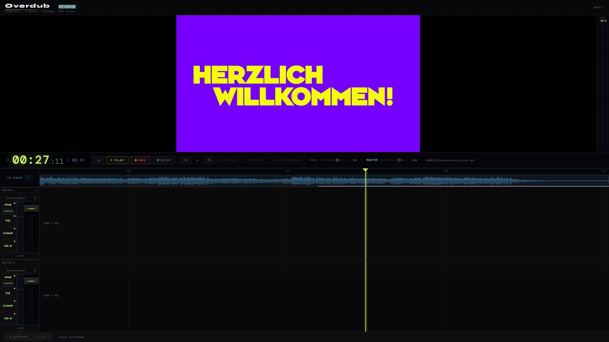

Frame-genaue Video-Vertonung in einem Tool: Sprecher-Aufnahme, KI-Denoiser, EQ, Kompressor, De-Esser und R128-konformer Export — vom Beitrag bis zur Magazin-Sendung.

Was sonst über drei Plugins, zwei Tools und einen Export-Pass läuft, passiert hier in einem Workflow.
Lade dein Video, vertone in Echtzeit. Smart Prompter und Mix-Layer halten Bild und Ton dauerhaft synchron — auch bei langen Magazinen.
Spektraler Wiener-Filter, trainiert auf Sprachsignale. Lüfter, Klima, Straßenlärm — alles raus, ohne dass die Stimme blechern wird.
5-Band parametrischer EQ, Compressor mit weichem Knee, De-Esser frequenzselektiv. Voreinstellungen für TV-Sprecher, Podcast und YouTube.
Sprecher und Bett werden automatisch gemischt. Voice setzt das Bett ab, ohne Atmer abzuhacken — keine manuellen Lautstärke-Automationen.
Presets für TV (-23 LUFS), Streaming (-14 LUFS), Podcast (-16 LUFS). Doppel-Gating, True-Peak-Limiter, ITU-R BS.1770-4 konform.
Strip Silence, Take-Comping, Magnet-Snap auf Video-Frames. Vertraute Tastenkürzel — wer Pro Tools oder Reaper kennt, kommt sofort rein.
Vom rohen Video bis zur fertig normalisierten Audiospur — keine Toolkette, kein Re-Render.
MP4, MOV, MKV. Audio aus dem Video wird automatisch ge-extrahiert und als Bett-Spur angelegt.
Voice-Spuren aufnehmen oder Audiodateien droppen. Optionaler Smart Prompter zeigt Manuskripte synchron zum Video.
Denoiser, EQ, Compressor und De-Esser sitzen pro Spur. Auto-Mix bündelt Voice und Bett mit Side-Chain-Ducking.
Preset wählen, einmal klicken — fertig im R128-Korridor. WAV, MP3, AAC. Optional: Mix-Stems für die Sendebearbeitung.
Saubere Kette von der Aufnahme bis zum Send-Master.